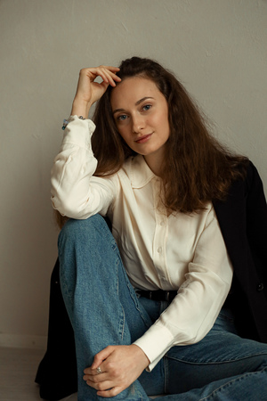

About Me
Hi! I’m Tatiana Menshakova, a curious, active, and empathetic person with a passion for learning and meaningful communication. I’m originally from Penza, Russia, and I hold a Master’s Degree in Teaching, Learning and Media Education from Finland, as well as a Bachelor’s Degree in English Teaching from Russia.
My journey into Information Technology started with my love for education. As a teacher, I was fascinated by how structured content and digital tools could make learning more accessible and engaging. This passion naturally led me to explore web development, where I could combine my skills in content design, education, and technology.
I enjoy creating websites that are not only visually appealing but also thoughtfully organized — helping people access information efficiently and enjoyably. I’m especially excited about projects that let me apply my background in education while continuously learning and growing in the IT field.
In my free time, I love to travel, read, and swim. My dream job is one that allows me to work in a hybrid mode, contribute to impactful projects, and keep challenging myself to improve.
Thanks for visiting my website — I hope it gives you a glimpse into who I am and what I love to do!